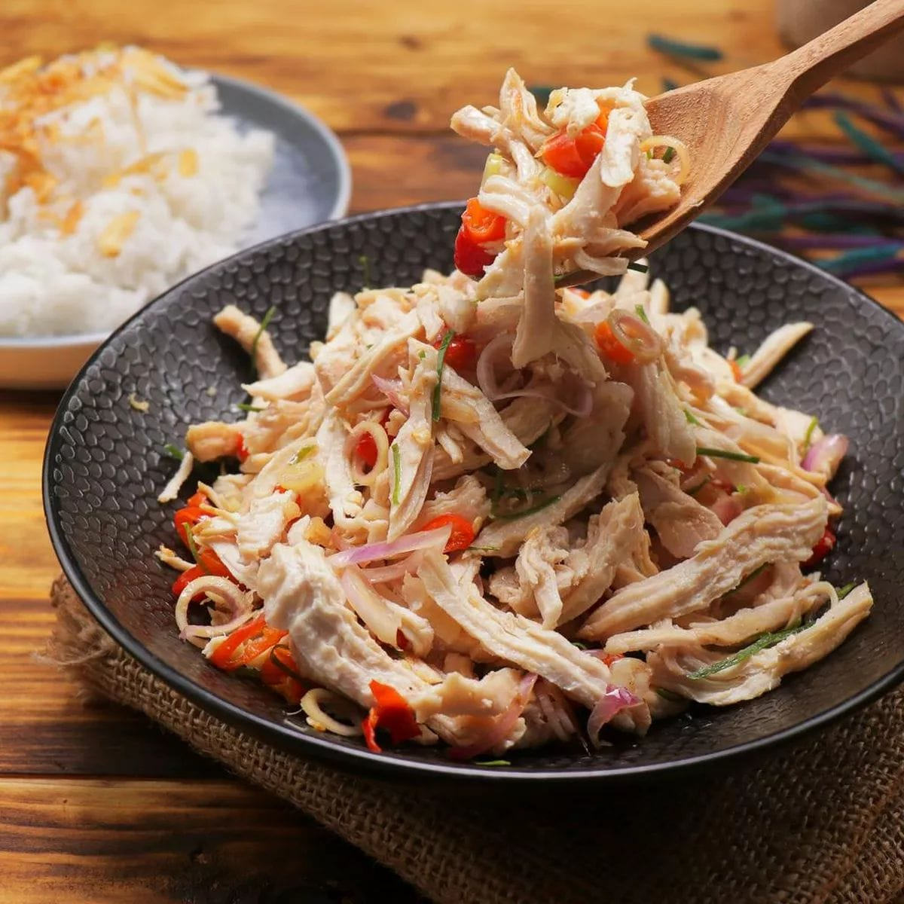

Ayam Sambal Matah dengan bumbu rempah yang kaya
Bahan:
- 350 gr dada ayam
- 4 buah sereh (ambil yang putihnya saja)
- 10 siung bawang merah
- 2 siung bawang putih
- 10 buah cabe rawit
- 7 lembar daun jeruk, iris-iris
- 50 gr buncis, iris tipis
- 1 buah jeruk nipis untuk tambahan
- Secukupnya air untuk merebus
- 150 ml air kaldu ayam sisa rebusan
- 2 sdt terasi
- 1 sdt himsalt
- 1/2 sdt kaldu jamur
- 1/2 sdt gula pasir
Cara Membuat:
- Iris tipis sereh, bawang merah, bawang putih, cabe rawit, daun jeruk dan buncis
- Campurkan terasi, garam, kaldu jamur dan gula pasir. Aduk rata
- Rebus ayam sampai matang, setelah agak dingin lalu suwir-suwir. Air kaldu rebusan ayamnya jangan di buang, sisakan 150 ml
- Tuangkan 150 ml air kaldu rebusan ayam tadi ke wajan, lalu masukkan suwiran ayam, tambahkan campuran bumbu. Aduk rata, tumis sekitar 1 menit menggunakan api besar
- Masukkan sereh, aduk rata, lalu tumis lagi sekitar 1 menit
- Masukkan bawang merah dan bawang putih, tumis lagi selama 1 menit
- Masukkan cabe rawit, aduk rata. Masukkan buncis dan daun jeruk, aduk-aduk sebentar, lalu angkat
- Kucuri dengan jeruk nipis, sajikan